Adicione um webhook ao seu projeto Gitlab, para que novas versões sejam automaticamente analisadas. Certifique-se que você tem permissão de mantenedor(a) ou dono(a) do projeto.
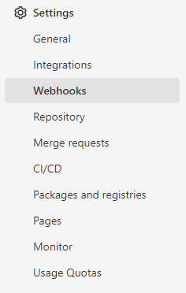
https://app.secdevias.com/gitlab_hook
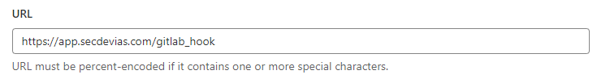
{{project_uuid}}
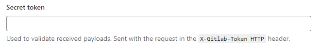
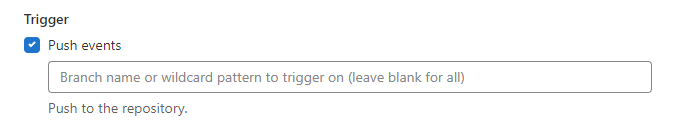
Por fim, adicione o webhook. Desse modo, seu projeto Gitlab será reanalisado quando houver atualizações. Caso deseje editar ou deletar o webhook, basta selecionar o botão correspondente.
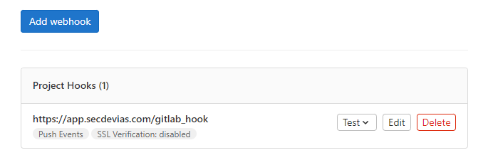
Crie um deploy token do seu projeto Gitlab, para que a aplicação Secdevias possa acessá-lo.
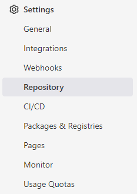
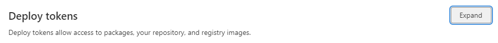
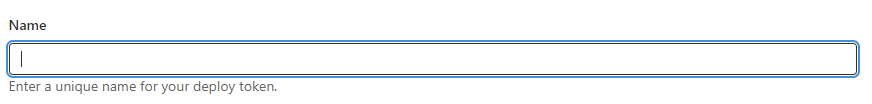
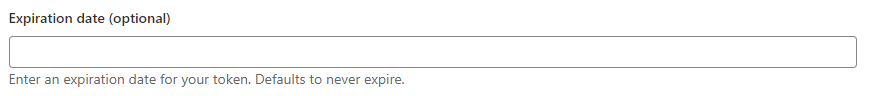
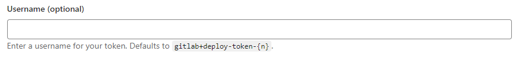
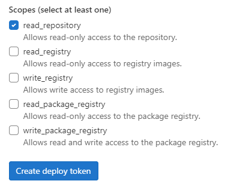
Após criar seu token, insira o nome de usuário do token, e o token, mostrados na janela abaixo, nos campos a seguir. Feito isso, novos relatórios de segurança serão gerados automaticamente para novas versões do projeto.
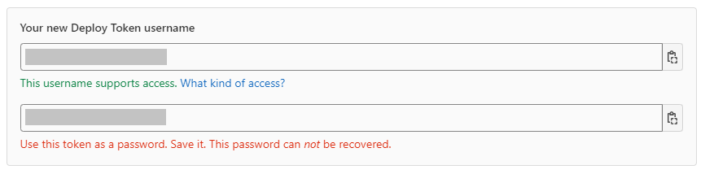